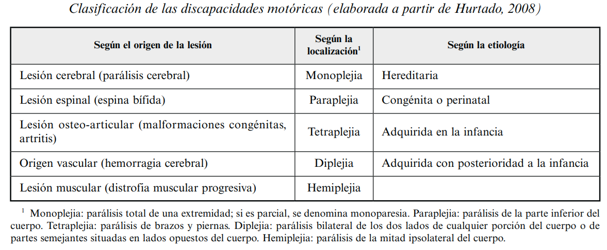

6 UNIDAD 2: DIFICULTADES DE APRENDIZAJE
⮚ Objetivo 1: Distinguir las dificultades de aprendizaje como factores asociados y determinantes en el proceso de enseñanza y aprendizaje.
⮚ Objetivo 2: Identificar los tipos de dificultades de aprendizaje más comunes en el ámbito educativo.
⮚ Objetivo 3: Diferenciar entre las Necesidades Educativas especiales asociadas y no
asociadas a la discapacidad.
6.1 Dificultades de aprendizaje, definición operacional y tipos.
Las DDAA se definen como aquellas dificultades de aprendizaje que están constituidas por un conjunto heterogéneo de problemas cuyo origen es, probablemente, una disfunción del sistema nervioso central. (Fiuza, et al, 2014)
Se afecta: el lenguaje, Procesamiento cognitivo (atención, percepción, memoria. Efectos en las disciplinas instrumentales básicas (Lenguaje, escritura y matemáticas.) Problemas de personalidad, autoconcepto y sociabilidad.
6.1.1 Características de las dificultades de aprendizaje
Contempla los factores biológicos, neurológicos y genéticos
● Alteraciones neurológicas, nivel de estudio por parte de las neurociencias.
● Causas genéticas, herencia familiar.
● Desarrollo del cerebro físicamente y aspectos propios del desarrollo
Se manifiestan en dificultades lingüísticas de comprensión y producción referidos a todos los componentes del lenguaje
● Niveles del desarrollo del Lenguaje afectados
● Niveles de aspectos cognitivos afectados
Se hace una doble referencia curricular: primero a las disciplinas instrumentales y después al resto de áreas curriculares.
● Dificultades específicas en asignaturas como lenguaje y matemáticas.
Se destaca que no son efecto, sino causa de problemas de personalidad, sociales y/o culturales.
● Causan una serie de conductas que pueden ser interpretadas como problemas contractuales.
● Existe mucha desinformación al respecto.
6.2 Clasificación de las dificultades de aprendizaje.
Tipos de Dificultades de Aprendizaje
Dificultades Específicas de Aprendizaje
- Dislexia
Dificultad en la lectura
Problemas de decodificación
- Disgrafía
Problemas en la escritura
Dificultades en la ortografía
- Discalculia
Dificultad en matemáticas
Problemas con conceptos numéricos
Trastornos del Desarrollo del Lenguaje
- Trastorno del Lenguaje Expresivo
Dificultad para expresar pensamientos
Problemas de vocabulario
- Trastorno del Lenguaje Receptivo
Dificultad para entender el lenguaje
Problemas para seguir instrucciones
Trastornos del Espectro Autista
- Trastorno Autista
Dificultades en la comunicación social
Comportamientos repetitivos
- Síndrome de Asperger
Habilidades lingüísticas relativamente intactas
Dificultades en habilidades sociales
Trastorno por Déficit de Atención e Hiperactividad (TDAH)
- TDAH Predominantemente Inatento
Problemas para mantener la atención
Desorganización
- TDAH Predominantemente Hiperactivo-Impulsivo
Hiperactividad
Impulsividad
Dificultades de Aprendizaje No Verbal
Problemas en habilidades motoras
Dificultad con la coordinación
Problemas de motricidad fina
- Problemas en habilidades visuales-espaciales
Dificultad para interpretar información visual
Problemas con la percepción espacial
Trastornos de la Coordinación del Desarrollo
- Dispraxia
Problemas de planificación motora
Dificultad en tareas motoras complejas
6.3 Necesidades educativas especiales no asociadas a la discapacidad.
Llamadas también Dificultades Específicas del Aprendizaje (DEA), término que se utiliza para hacer referencia a “una determinada dificultad dentro de un área de aprendizaje en un niño que rinde satisfactoriamente en otras áreas (Worthington, 2003). Estos problemas se repiten en las familias con antecedentes de dificultades de aprendizaje y en todos los contextos económicos.
Cada cerebro es diferente y un mismo trastorno o dificultad, puede presentar diferentes características y asociarse con otras.
Dislexia: Definida como la dificultad en la interpretación del lenguaje escrito, en una persona que no tiene discapacidad visual, auditiva ni intelectual (Worthington, 2003).
Tipos de dislexia
Según la ruta léxica afectada: Fonológica, Superficial o visual, Mixta o profunda.
Según su causa: Del desarrollo, Adquirida.
Según su grado: Leve, Moderada, Grave.

Disgrafía: El término «disgrafía» hace referencia a las deficiencias de tipo funcional que afectan a la calidad de la escritura del sujeto, en lo concerniente al trazado o la grafía (Rivas y Fernández, 2011).
Discalculia: Trastorno estructural de la maduración de las habilidades matemáticas, referido sobre todo a niños y que se manifestaría por la comisión de errores variados en la comprensión de los números, habilidades de conteo, habilidades computacionales y solución de problemas verbales.
- Verbal
Nombrar cantidades matemáticas, los números, términos, símbolos y relaciones.
- Practognóstica
Enumerar, comparar, manipular (reales o en imágenes) objetos matemáticamente.
- Lexical
Dificultades en la lectura de simbolos matemáticos.
- Grafical
Dificultades en la escritura de simbolos matemáticos.
- Ideognóstica
Dificultades en hacer operaciones mentales.
Cálculos numéricos.
- Operacional
Comprensión de conceptos matemáticos
Ejecución de operaciones
Trastorno del Aprendizaje no verbal
- El Trastorno de Aprendizaje no verbal (TANV), es un conjunto de deficiencias perceptuales visoespaciales, táctiles y psicomotrices.
- También llamado trastorno de aprendizaje procedimental (TAP).
- Se produce por una alteración en regiones cerebrales del Hemisferio Derecho.
- Tiene repercusiones negativas en la comprensión lectora, escritura, matemáticas y rendimiento escolar.
Trastorno por Déficit de Atención con Hiperactividad
El TDAH, tal y como lo conceptualizan Marco, Grau y Presentación (2011), se caracteriza por una serie de disfunciones cognitivas o neuropsicológicas que, junto a las manifestaciones conductuales, producen un impacto generalizado en distintas áreas del desarrollo.
TDAH Tipo Combinado: Presencia tanto de conductas combinadas de impulsividad y desatención
TDAH Énfasis falta de atención: Presencia de conductas asociadas mayormente a la pérdida de atención
TDAH Énfasis Impulsividad: Presencia de conductas asociadas mayormente a la falta de control de impulsos.
Trastornos del Neurodesarrollo
Como norma general, los trastornos del desarrollo tienen un origen causal de tipo biológico, lo que implica que se trata de problemas serios que no dependen básicamente de los padres o del entorno, y cuya naturaleza o núcleo variaría según el tipo de trastorno.(Fiuza, 2014)
Ecológico
-Mirada global
-Ambientes y apoyos naturales e interacciones
-Participación activa del estudiante, familia y grupo de soporte
-Focaliza la historia de vida
Funcional
-Responde a las necesidades Pertinencia
-Los objetivos y actividades responden a las nececidades especiales
-Maximiza niveles de autonomía, interacciones y desempeño de roles
Autismo
Primer nivel: biológico
Origen genético u otro origen conocido o desconocido
Segundo nivel: cognitivo-emocional
Déficit en la teoría de la mente y habilidades metarrepresentacionales
Tercer nivel: conductual
Dificultades escolares, de adaptación social, en la comprensión de situaciones sociales…

Aspectos definitorios de los trastornos del desarrollo
Discapacidad cognitivo-intelectual
Deficiencia sensorial
Deficiencia motora
Trastorno generalizado del desarrollo
Niñez, infancia y adolescencia
Cronicidad en las dificultades
Alteraciones en la inteligencia
Alteración de la conducta adaptativa
Necesidad de recursos
Discapacidad (restricción o ausencia de la capacidad de realizar una actividad, en la forma o dentro del margen que se considera normal para un ser humano)
Necesidades educativas especiales
6.4 Necesidades educativas especiales asociadas a la discapacidad
Discapacidad visual: El término «disgrafía» hace referencia a las deficiencias de tipo funcional que afectan a la calidad de la escritura del sujeto, en lo concerniente al trazado o la grafía (Rivas y Fernández, 2011).
Discapacidad auditiva: El déficit auditivo es un término genérico que engloba los diversos grados de la pérdida auditiva. Se produce pérdida auditiva cuando hay una interrupción en el camino que ha de seguir la señal sonora en el órgano de la audición, causando una disminución de la captación de los estímulos sonoros del entorno (Cardona, Gomar, Palmés y Sadurní, 2010).
Trastornos Motores: Los trastornos motores son alteraciones del sistema nervioso que se caracterizan por el desorden de los movimientos voluntarios y/o la aparición de movimientos involuntarios, posturas anormales, movimientos excesivos o la nula capacidad de movimiento.
Trastorno de desarrollo de la coordinación: El desarrollo motor es el resultado de los cambios producidos evolutivamente en la conducta motora que derivan en habilidades complejas que se combinan, integran y mecanizan para llegar a ser habilidades motrices.
Trastornos de movimientos estereotipados: Las estereotipias son movimientos repetitivos, rítmicos y carentes de propositividad, que siguen un repertorio individual propio de cada individuo y que se presentan bajo un patrón temporal variable, bien transitorio o persistente (Pérez, 2012).
Trastornos por TICS: Los tics son aquellos movimientos y/o vocalizaciones motoras involuntarias, rápidas, recurrentes y súbitas, precedidas por impulsos somatosensoriales.
1.1 Trastorno de Tourette
1.2 Trastorno de tics motores o vocales persistente (crónico)
1.3 Trastorno de tics transitorio
1.4 Otro trastorno de tics especificado
1.5 Trastorno de tics no especificado
- Trastorno de Tourette Se caracteriza por tics motores, y uno o más tics fónicos, que se presentan en al menos un año con el inicio en la infancia o la adolescencia
Discapacidad Física/Motora: Las discapacidades motóricas forman parte de las discapacidades físicas que dificultan en mayor o menor medida las posibilidades de movimiento de quienes las sufren. Su etiología es muy amplia, al igual que el grado de afectación a nivel motriz, lingüístico, psicológico y neurológico, por lo que las alteraciones del desarrollo y las NEE que estos niños presentan son también muy diferentes. (Fiuza, Et al, 2014).

Según el origen de la lesión
Lesión cerebral (parálisis cerebral)
Lesión espinal (espina bífida)
Lesión osteo-articular (malformaciones congénitas, artritis)
Origen vascular (hemorragia cerebral)
Lesión muscular (distrofia muscular progresiva)
Según la localización
Monoplejia
Paraplejia
Tetraplejia
Diplejia
Hemiplejia
Monoplejia: parálisis total de una extremidad; si es parcial, se denomina monoparesia. Paraplejia: parálisis de la parte inferior del cuerpo. Tetraplejia: parálisis de brazos y piernas. Diplejia: parálisis bilateral de los dos lados de cualquier porción del cuerpo o de partes semejantes situadas en lados opuestos del cuerpo. Hemiplejia: parálisis de la mitad ipsolateral del cueгро.
Según la etiología
Hereditaria
Congénita o perinatal
Adquirida en la infancia
Adquirida con posterioridad a la infancia
Discapacidad intelectual:
La DI es una condición neurológica, es decir, una condición causada por modificaciones estructurales y funcionales del cerebro, que se caracteriza por limitaciones sustanciales en las destrezas cognitivas y la conducta adaptativa reflejadas en un déficit en las habilidades conceptuales y de interacción social. Dichas dificultades se expresan antes de los 18 años de edad y perduran toda la vida (Schalock et al., 2010; Schalock, Luckasson & Tassé, 2019; Vissers, Gilissen & Veltman, 2015
Nota: La clasificación siguiente no esta en las diapositivas.
6.4.1 Dotación superior
Luque y Luque citado por Bustamante (2021) define a la dotación intelectual como:
Una manera de designar a aquellos niños y niñas, que comparten determinadas características, relacionadas con un buen desarrollo cognitivo, alto nivel de ejecución en habilidades académicas, pensamiento creativo, imaginación, aptitudes espaciales…, características con las que, en su conjunto, se acepta que, el niño o niña con altas capacidades intelectuales, es una persona en la que se da una integración de talento, de características personales propias y en un contexto de desarrollo. Ya en el ámbito escolar los niños, niñas y adolescentes con Dotación Intelectual o Genialidad evidencian diferencias con sus pares, debido a las características precoces que presentan a muy temprana edad, en el área intelectual, académica y social. p. 5
6.4.2 Disortografía
La disortografía se define como un problema específico de la escritura en la cual se muestran dificultades para escribir de forma correcta las palabras. Una de las consecuencias de la disortografía es el bajo rendimiento y la desmotivación del estudiante ocasionando altos niveles de deserción y fracaso escolar (Gonzáles, 2020).
6.4.3 Disgrafía
De acuerdo a Hernández, “La disgrafía es un trastorno funcional, es decir, que no está causado por una lesión cerebral o sensorial, ni por una deficiencia intelectual, y que afecta a la grafía, es decir a la forma o trazado, de las letras” (como se citó en López, 2015).
6.4.4 Discalculia
Árizaga y Román (2021) definen a la discalculia como “una dificultad que se presenta de forma oral, escrita y simbólica al momento del cálculo aritmético, lo que provoca que el desarrollo de los procesos matemáticos para la resolución de problemas no se desarrolle de manera completa y efectiva, dado que el escolar no puede razonar de manera lógica y no puede operar de forma clara, correcta y precisa con símbolos matemáticos”
6.4.5 Trastornos del comportamiento
6.4.5.1 Trastorno de Déficit de atención con Hiperactividad
Mayo Clinic define al trastorno por déficit de atención e hiperactividad (TDAH) como una afección crónica que afecta a millones de niños y a menudo continúa en la edad adulta. El TDAH incluye una combinación de problemas persistentes, tales como dificultad para mantener la atención, hiperactividad y comportamiento impulsivo.
Los niños con TDAH también pueden tener dificultades con la baja autoestima, las relaciones problemáticas y el bajo rendimiento escolar. Los síntomas a veces disminuyen con la edad. Sin embargo, algunas personas nunca superan por completo sus síntomas de TDAH. Pero pueden aprender estrategias para tener éxito.
Aunque el tratamiento no cura el TDAH, puede ayudar mucho con los síntomas. El tratamiento comúnmente involucra medicamentos e intervenciones conductuales. El diagnóstico y tratamiento tempranos pueden hacer una gran diferencia en el resultado.
6.4.5.3 Trastorno negativista desafiante
Incluso los niños que tienen un buen comportamiento pueden ser difíciles y desafiantes en ocasiones. Pero los niños pequeños o adolescentes pueden manifestar un patrón frecuente y persistente de ira, irritabilidad, discusión, desobediencia o resentimiento hacia los padres y hacia otras figuras de autoridad y es posible que padezcan el trastorno negativista desafiante.
Es necesario recibir ayuda de médicos, profesionales de salud mental y expertos en desarrollo infantil.
El tratamiento conductual del trastorno negativista desafiante implica aprender habilidades para ayudar a construir interacciones familiares positivas y a controlar el comportamiento problemático. Tal vez se necesite terapia adicional, y posiblemente medicamentos, para tratar trastornos de salud mental relacionados.
6.4.5.4 Situaciones de vulnerabilidad
Varios contextos y situaciones sociales en que se pueden encontrar los niños se convierten en causa de dificultades de aprendizaje, estos pueden ser:
· Enfermedades catastróficas: necesidades médicas no solventadas que pueden causar baja autoestima y motivación
· Víctimas de violencia: es claro que los niños no pueden desempeñarse eficientemente en las tareas académicas si existe un conflicto problemático en el hogar y la violencia es uno de ellos.
· Menores infractores: niños y jóvenes envueltos en situaciones de peligro y riesgo de infracciones a la ley incitados u obligados por el medio que los rodea.
· Movilización humana: la necesidad de migrar, movilizarse muchas veces ocasiona la ruptura del círculo social de base: la familia, motivo por el cual los niños pueden sufrir bajo rendimiento escolar por la ausencia de los padres o inclusive estando en compañía de estos, la integración en otra cultura por necesidad de movilizarse puede ser compleja.
· Adicción: adicción a distintas sustancias y sus efectos en la salud pueden impedir que los niños y adolescentes logren un aprendizaje adecuado.
Necesidades educativas especiales asociadas a la discapacidad.